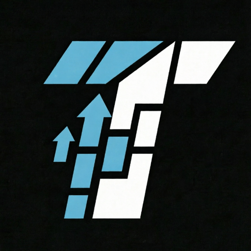

TOCK LABS
Desarrollo de aplicaciones móviles, extensiones para navegadores y utilidades digitales con enfoque en procesamiento local, rendimiento y privacidad.
I. Aplicación Móvil: Afinador Simples
Google Play Store • Versión 1.2.1
Afinador Simples es una suite acústica profesional para músicos de escenario, estudio y ensayo. Reúne tres herramientas fundamentales en una sola interfaz limpia y sin fricción:
- Afinador Cromático de Alta Precisión: Detección matemática en tiempo real con lectura exacta en Hertz (Hz) y desviación de centésimas.
- Metrónomo Profesional: Control de compases interactivos, tiempos clásicos italianos (Largo, Andante, Moderato, Allegro, Presto) y subdivisiones rítmicas.
- Grabador de Ensayos Integrado: Captura de audio de alta fidelidad con visualización de onda sonora viva y reproducción en bucle sin salir de la app.
Incluye afinación especializada para el Cuatro Venezolano con su tradicional afinación reentrante (Cambur Pintón: La3, Re4, Fa#4, Si3), además de Guitarra (6 cuerdas), Bajo Eléctrico (4 y 5 cuerdas con Si subgrave), Ukelele, Cavaquinho, Mandolina, Banjo (5 cuerdas), Violín, Violonchelo y Modo Cromático libre.
II. Extensiones de Navegador & Utilidades Web
Publicadas en Chrome Web Store
TockTexture Studio
GameDev Texture Processor • 100% Client-SideMotor de procesamiento y optimización de texturas para videojuegos que opera de manera 100% local en el navegador mediante Web Workers. Incluye escalado Power of Two (POT), inversión Y-Flip en Normal Maps (DirectX / OpenGL), corrección de Alpha Bleed y empaquetado de canales PBR / RMA.
IAssetflow
AI E-Commerce Media & Catalog AssistantExtensión de productividad para e-commerce. Permite extraer imágenes y videos en alta resolución desde marketplaces (AliExpress, Amazon, Walmart) y utilizar IA para generar títulos SEO, descripciones optimizadas y catálogos en formato CSV compatibles con Shopify y WooCommerce en 1 clic.
III. Filosofía del Estudio
En Tock Labs creemos en la honestidad del software independiente: herramientas que hacen exactamente lo que prometen con rapidez y ligereza. Todo el procesamiento de audio, imágenes y datos se ejecuta de forma estrictamente local en tu propio dispositivo; no implementamos telemetría invasiva, no exigimos inicios de sesión innecesarios y respetamos plenamente la privacidad de tu equipo.